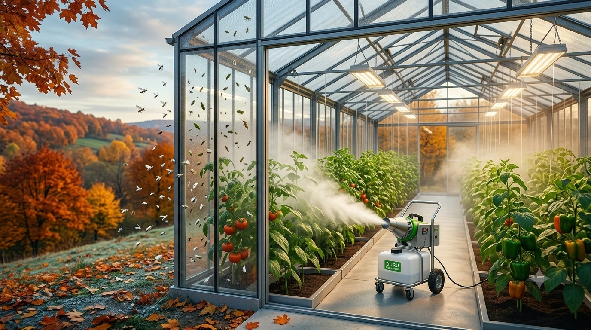

Sonbahar Neden Sera Haşere Kontrolü İçin Kritik Bir Dönem?
Birçok üretici, sera haşere kontrolü stratejisini yalnızca yaz aylarına odaklandırır; ancak sonbahar dönemi, kış boyunca seranın haşere baskısını belirleyen kritik bir geçiş sürecidir. Bu dönemde yapılan etkili bir ilaçlama, kış aylarında zararlı popülasyonunun düşük seviyede kalmasını ve ilkbaharda daha hızlı bir başlangıç yapılmasını sağlar.
Sonbaharda Zararlı Popülasyonu Neden Artar?
Sıcaklıkların düşmesiyle birlikte, yaprak biti, beyaz sinek ve trips gibi zararlılar seranın daha sıcak ve korunaklı iç kısımlarına yoğunlaşma eğilimi gösterir. Bu doğal yoğunlaşma, eğer kontrol altına alınmazsa, kış aylarında seranın ısıtılan iç ortamında zararlıların üremeye devam etmesine ve ilkbaharda çok daha büyük bir popülasyonla karşılaşılmasına yol açabilir.

Sonbahar İlaçlamasının Avantajları
Sonbaharda yapılan kapsamlı bir ULV ilaçlama uygulaması, hem mevcut zararlı popülasyonunu büyük ölçüde azaltır hem de kışı geçirecek yumurta ve larva aşamasındaki bireyleri etkisiz hale getirir. Bu, kış aylarında daha az ilaçlama ihtiyacı ve ilkbaharda daha sağlıklı bir üretim sezonu başlangıcı anlamına gelir.
Sera Tipi ULV Sistemlerinin Sonbahar Uygulamasındaki Rolü
Kapalı sera ortamında, ısıtma sistemlerinin devreye girmesiyle hava sirkülasyonu değişebilir; bu da ilaçlamanın homojen dağılımını etkileyebilir. Sera tipi ULV cihazları, ideal mikron seviyesindeki damla çapı sayesinde bu değişen koşullarda dahi seranın tabanından tavanına kadar etkili bir kaplama sağlar. Otomatik zamanlama özelliği, üreticinin kış hazırlıkları (ısıtma sistemi bakımı, örtü kontrolü gibi) ile uğraştığı yoğun dönemde, ilaçlama işini otomatikleştirerek zaman tasarrufu sunar.
Kış Öncesi Kontrol Listesi
- Seranın genel temizliği ve hasat artıklarının uzaklaştırılması
- Kapsamlı bir ULV ilaçlama uygulaması ile mevcut zararlı popülasyonunun azaltılması
- Sera tipi ULV cihazının bakımının yapılması (nozul, tank, motor kontrolü)
- Kış boyunca düzenli aralıklarla otomatik ilaçlama programının ayarlanması
- Isıtma sistemi devreye girdikten sonra nem ve sıcaklık dengesinin izlenmesi